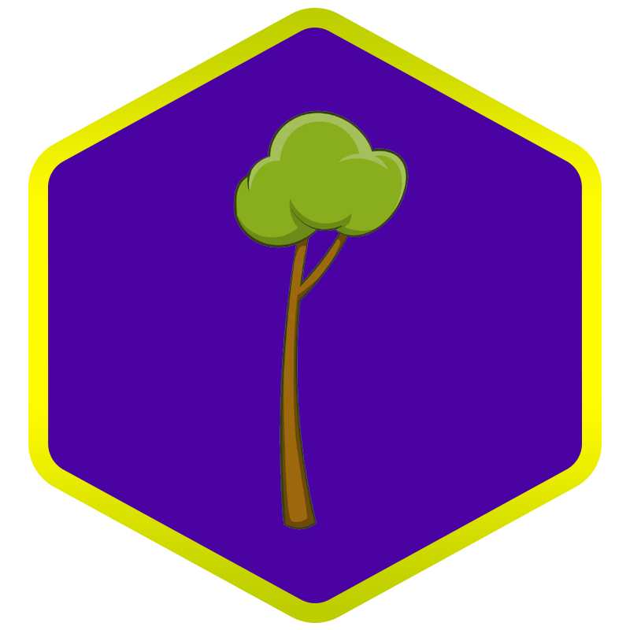
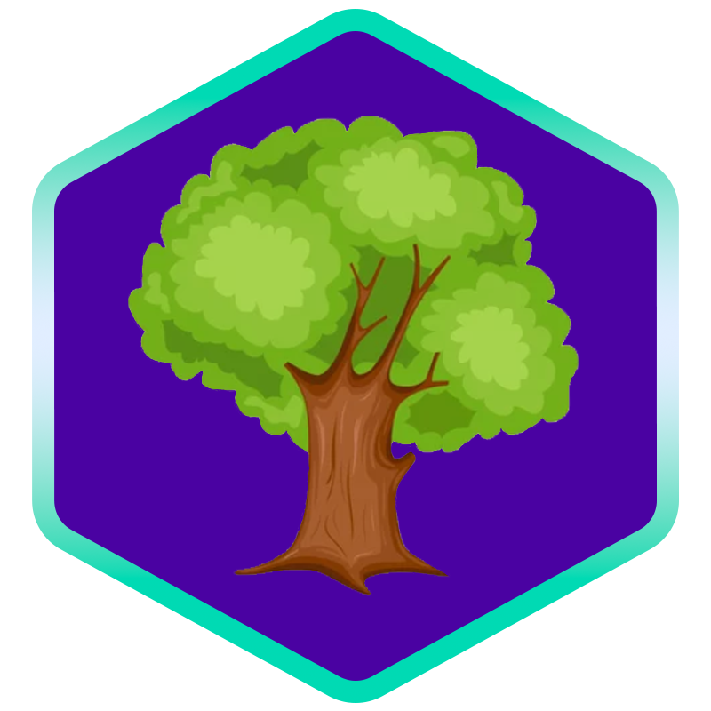
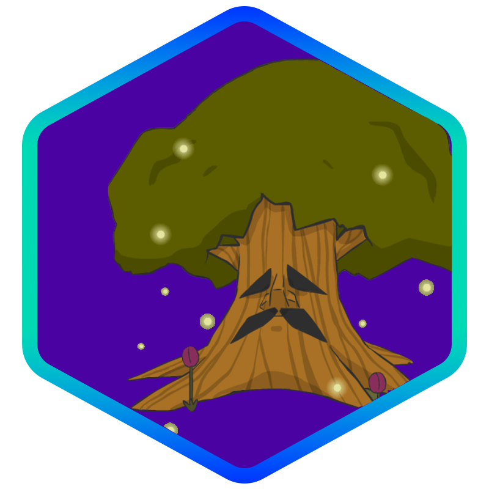
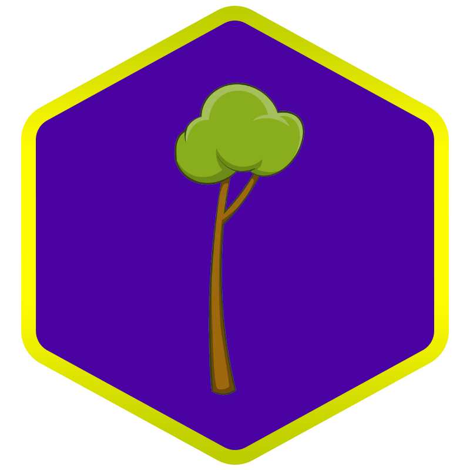
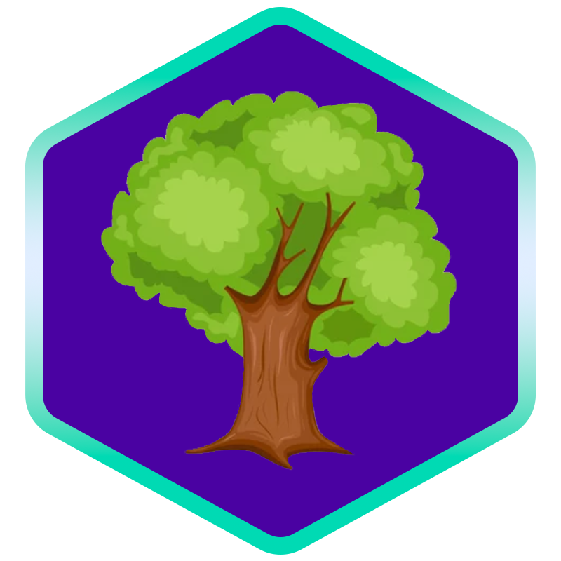
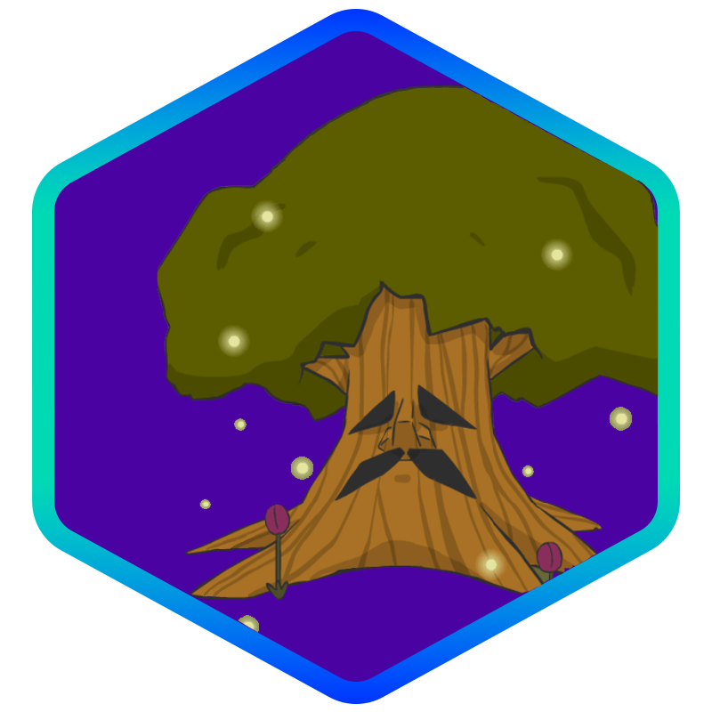
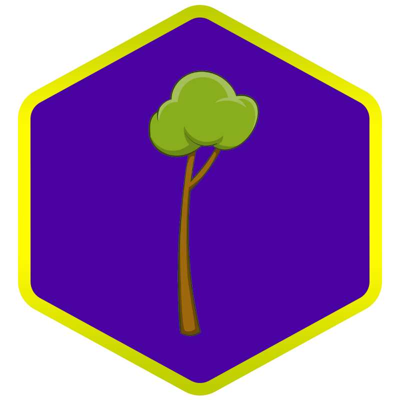
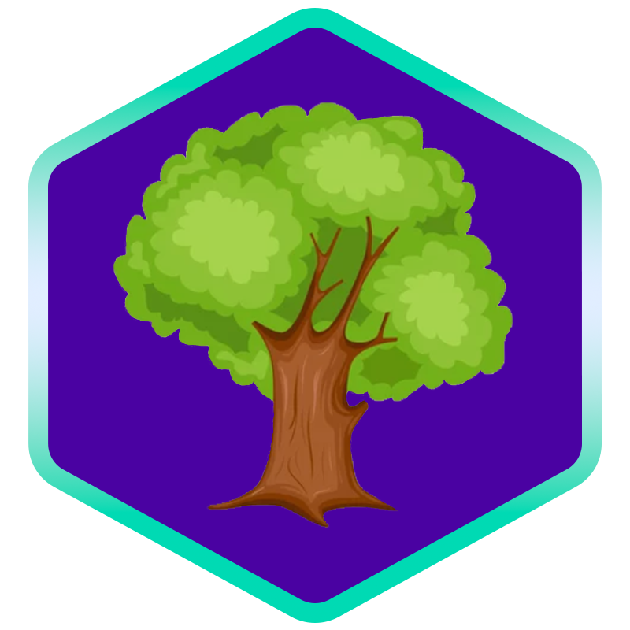
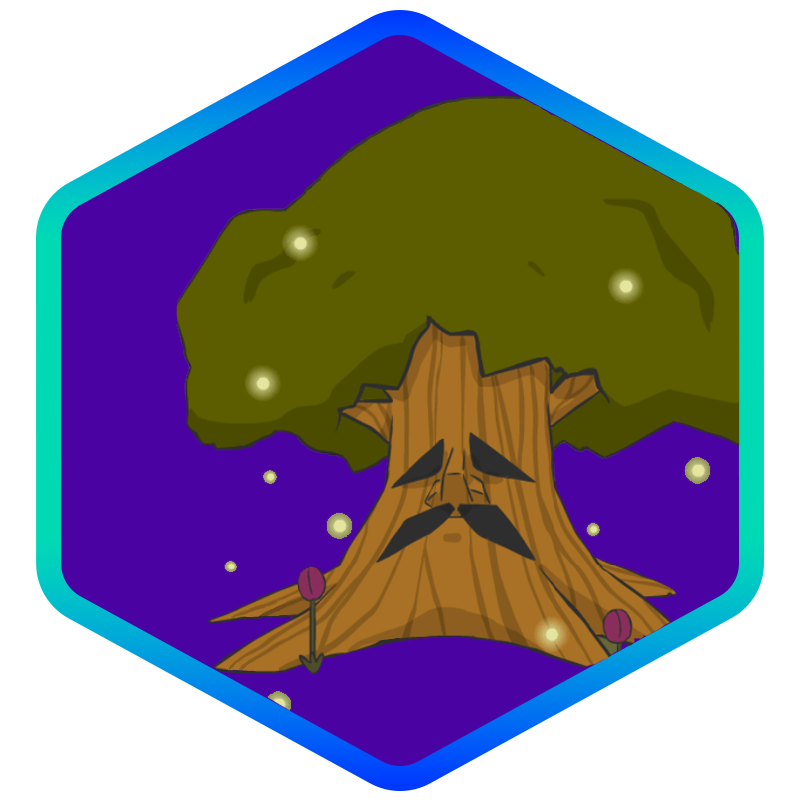
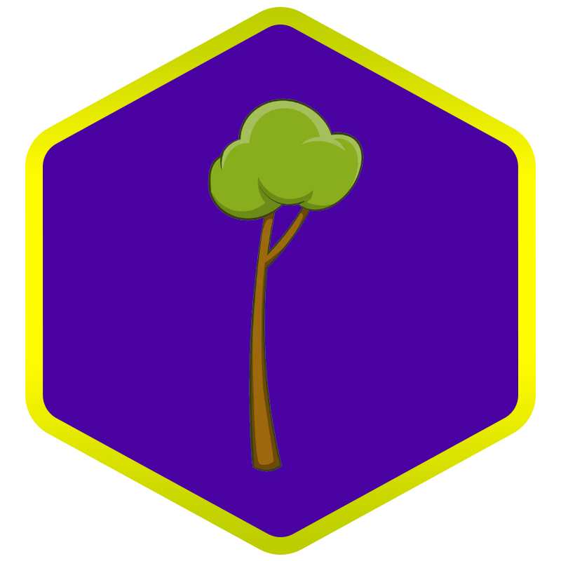
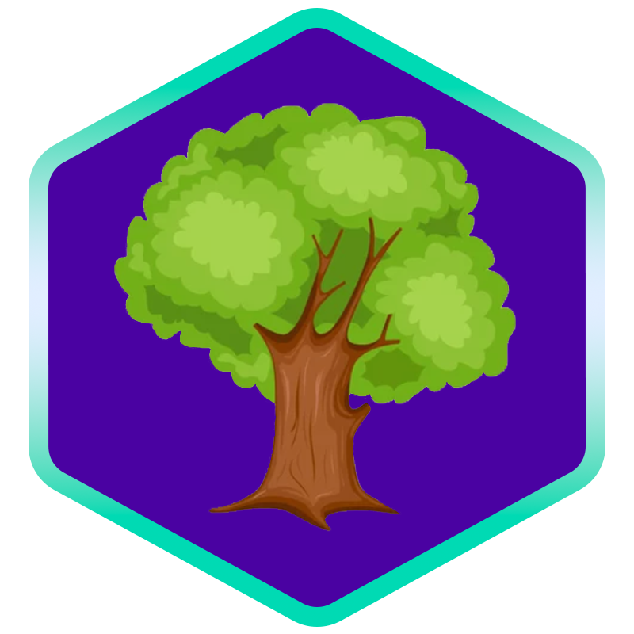
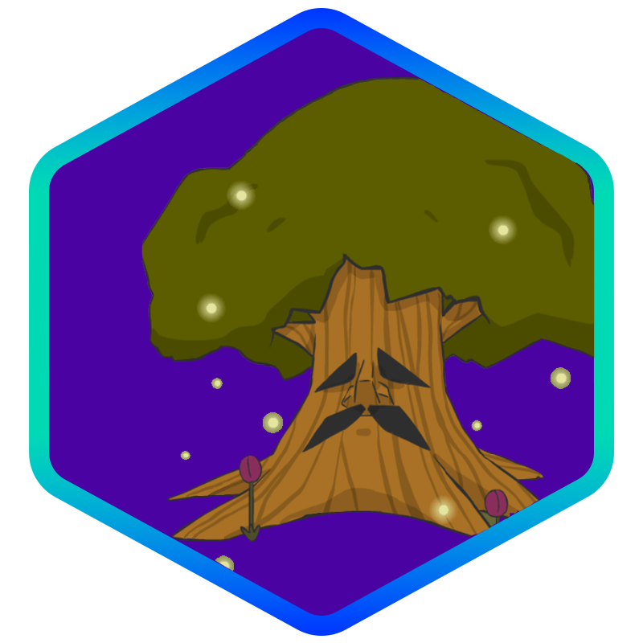
Congrats on starting out, you have a long way to go to climb up the ranks, but I'm sure you will be able to do it! To start earning points for the next rank up, start by taking a tours, the threshold for sprout rank is easily obtainable. I hope you enjoy many of the tours we have avalible!
Sprouts are just the 2nd stage of growing into a tree's life cylce, keep it up and get too sapling rank!
Reward: Free WSU Landyard!
Saplings are the 3rd stage of growing into a tree, we wish you the best on ranking up!
Reward: Free WSU Coffee Mugg!
Congrats on Tree rank, but here is the true testimate of your dedication, can you get to Elder Rank?
Rewards: 5 Free Meal Swipes at Zanes!
WOW YOU DID IT!
Rewards: +1 credit & plant a tree of your choice!